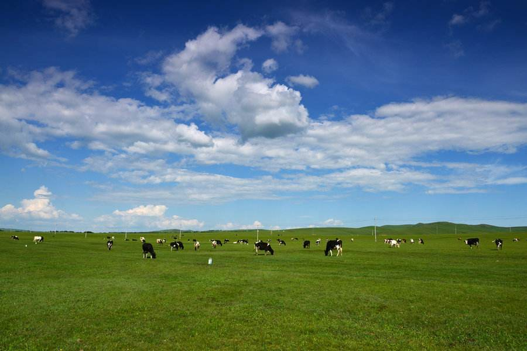

-
内蒙古 By BAIDU,Link
内蒙古自治区，简称“内蒙古”，中华人民共和国省级行政区，首府呼和浩特市。位于中国华北地区，内蒙古界于北纬37°24′-53°23′，东经97°12′-126°04′之间，东北部与黑龙江、吉林、辽宁、河北交界，南部与山西、陕西、宁夏相邻，西南部与甘肃毗连，北部与俄罗斯、蒙古接壤 [1-2] 内蒙古自治区地势由东北向西南斜伸，呈狭长形，全区基本属一个高原型的地貌区，全区涵盖高原、山地、丘陵、平原、沙漠、河流、湖泊等地貌，气候以温带大陆性气候为主，地跨黄河、额尔古纳河、嫩江、西辽河四大水系。 [3-4] 内蒙古总面积118.3万平方公里，辖9个地级市、3个盟。截至2019年6月，全区辖23个市辖区、11个县级市、17个县、49个旗，3个自治旗，合计103个县级区划。246个街道、508个镇、99个乡、17个民族乡、153个苏木、1个民族苏木，合计1024个乡级区划。
{kind=link}
-
西藏 By BAIDU,Link
西藏，简称“藏”。西藏自治区，首府拉萨市，位于中华人民共和国西南边陲，是中国五个少数民族自治区之一。西藏位于青藏高原西南部，地处北纬26°50′至36°53′，东经78°25′至99°06′之间，平均海拔在4000米以上，素有“世界屋脊”之称。土地面积为120218947.91公顷 [1] ，约占全国总面积的1/8，在全国各省、市、自治区中仅次于新疆。2018年末常住人口343.82万人。 [2] 西藏北邻新疆，东接四川，东北紧靠青海，东南连接云南；周边与缅甸、印度、不丹、尼泊尔、克什米尔等国家及地区接壤，陆地国界线4000多公里，是中国西南边陲的重要门户。
{kind=link}
-
杭州西湖 By BAIDU,Link
西湖，位于浙江省杭州市西湖区龙井路1号，杭州市区西部，景区总面积49平方千米，汇水面积为21.22平方千米，湖面面积为6.38平方千米。 西湖南、西、北三面环山，湖中白堤、苏堤、杨公堤、赵公堤将湖面分割成若干水面。西湖的湖体轮廓呈近椭圆形，湖底部较为平坦，湖泊平均水深为2.27米，最深约5米，最浅不到1米。湖泊天然地表水源是金沙涧、龙泓涧、赤山涧（慧因涧）、长桥溪四条溪流。西湖地处中国东南丘陵边缘和中亚热带北缘，年均太阳总幅射量在100—110千卡/平方厘米之间，日照时数1800—2100小时。 [1-2] 西湖有100多处公园景点，有“西湖十景”、“新西湖十景”、“三评西湖十景”之说，有60多处国家、省、市级重点文物保护单位和20多座博物馆，有断桥、雷峰塔、钱王祠、净慈寺、苏小小墓等景点。 [3]
{kind=link}